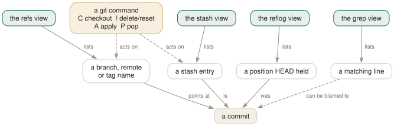

Day 09
Refs, stashes and the reflog
The views that browse names instead of history — and the keys that act.
By the end of today you can
- switch branches, apply stashes and search file contents without leaving tig
- use the reflog view to recover a commit you thought you had lost
- recognise which keys in these views change the repository, and which of those prompt first
Four views, one shape
Everything until now has browsed the commit list or a file. These four browse names: branch names, stash entries, places HEAD has been, lines that match a pattern. Each one resolves to a commit you can open with Enter, and each carries a few keys that run real git commands.

The refs view: branches as a list you can act on
r opens every branch, remote and tag, most recent first:
All references
2026-03-05 16:00 Ada Lovelace master Merge branch 'feature/parser'
2026-03-03 09:30 Ada Lovelace feature/parser Implement parse()
2026-03-01 10:00 Ada Lovelace v1.0 Initial import
Enter on a branch reloads the main view at that branch — the fastest way to answer “what has been happening on release/3.2” without checking anything out. tig refs --branches, --remotes or --tags limits which categories appear.
Two keys here change your repository, and both prompt first:
- C
git checkout %(branch)— switch to the branch under the cursor.- !
git branch -D %(branch)— force-delete it.
The stash view, and why A beats P
y lists the stash stack. Enter shows a stash's diff — which is the real value, because git stash list tells you nothing about what is in each entry and stash@{2} is not a memorable name.
- A
git stash apply %(stash)— restore the changes, keep the entry.- P
git stash pop %(stash)— restore the changes, remove the entry.- !
git stash drop %(stash)— discard the entry.
The reflog: the view that undoes your mistakes
L — a capital L, because lower-case l is the log view — opens the reflog:
7a023dd [master] reset: moving to HEAD
7a023dd [master] merge feature/parser: Merge made by the 'ort' strategy.
a992b98 commit: Start the manual
0b12e18 <v1.0> checkout: moving from feature/parser to master
785f586 [feature/parser] commit: Implement parse()
Every position HEAD has held, with the operation that moved it. This is where a commit goes when you reset past it, when a rebase abandons it, when you delete the branch that pointed at it. It is not lost; it is here, until git's garbage collection eventually takes it weeks later.
The recovery move is to find the commit, press Enter to confirm it is the one, and then give it a name. The two keys bound in this view — C for git checkout %(branch) and ! for git reset --hard %(commit) — are both blunter than you usually want.
The grep view
g, or tig grep <pattern>, searches file contents — which is the thing / on Day 5 could not do. It takes git grep's options, so tig grep -i -w parse works as you would expect.
By default matches are grouped under a heading per file. If you would rather have the filename on every line, in the shape git grep itself prints, that is a one-line setting — and it is today's config block.
Today's habit
Stop running git branch -a and git stash list. Press r and y instead — both give you the same list plus the ability to look inside before you act. And the next time something goes wrong, reach for L before you reach for a search engine.
Tomorrow: everything you can say to tig before it starts.
New vocabulary
Keys
| Key | Does |
|---|---|
| r | Refs view: branches, remotes and tags. |
| y | Stash view: the stash stack. |
| L | Reflog view: where HEAD has been. |
| g | Grep view: search file contents. |
| C(refs,reflog) | Check out the branch under the cursor. Prompts first. |
| !(refs,stash,reflog) | Delete the branch, drop the stash, or reset --hard. All prompt first. |
| A(stash) | Apply the selected stash, keeping the entry. |
| P(stash) | Pop it: apply and remove the entry. |
Commands
| Command | Does |
|---|---|
tig refs | Start in the refs view. |
tig stash | Start in the stash view. |
tig reflog | Start in the reflog view. |
tig grep <pattern> | Start in the grep view. Takes git grep options. |
tig refs --branches | Limit the refs view to branches. |
Options
| Option | Does |
|---|---|
grep-view | Columns of the grep view. Adding file-name gives the git grep shape. |
Today's configappend to ~/.tigrc
Put the filename on every grep match instead of grouping matches under per-file headings. Same shape as git grep, so the view can be read and copied line by line.
set grep-view = file-name:yes line-number:yes,interval=1 text
tig reads this only at startup. Reload without quitting by binding :source ~/.tigrc to a key (Day 12), or check it with tig 2>&1 | head — errors arrive as tig warning: lines before the first view draws.
Drillsdo these in a real terminal, today
Self-check
Answer out loud first, then unfold.
tigmanual(7) lists exactly three built-in external commands, one of which is G running git gc. You press G in the main view and the commit graph disappears. What is going on?
The manual is out of date. On 2.6.1 there is no git gc binding at all — dumping every live binding with :save-options shows nothing running gc. G in the main keymap is :toggle commit-title-graph, which is what you saw.
It has gone the other way too: the binary ships several external commands the manual does not mention, including everything in today's lesson — C and ! in the refs and reflog views, and A, P, ! in the stash view. The help view (h) is generated from reality; the manual is not.
What is the difference between A and P in the stash view, and which should you reach for?
A runs git stash apply: the changes come back and the stash entry stays. P runs git stash pop: the changes come back and the entry is removed.
Reach for A. If applying produces conflicts or turns out to be the wrong stash, you still have the entry and can try again; with P on a conflict you are left resolving by hand with nothing to fall back on. Drop it deliberately with ! once you are sure — that is one keystroke of insurance.
You reset a branch to an earlier commit and now want the work back, but you never wrote down the hash. Which view, and why does it have what you need?
The reflog view, L. The reflog records every position HEAD and your branches have held, whether or not anything still references those commits, so the commit you reset away from is listed with the operation that moved you off it.
The lines read like a992b98 commit: Start the manual and 0b12e18 checkout: moving from feature/parser to master. Put the cursor on the one you want, press Enter to confirm it is the right commit, and then recover it with a branch: :!git branch rescue %(commit) is safer than any of the keys in that view.
The grep view groups matches under filename headings, but you wanted one line per match like git grep. What changes it?
The grep-view column list. Its default has file-name:no, so tig shows a heading per file and bare matches beneath. Turning the column on puts the filename on each match line instead:
set grep-view = file-name:yes line-number:yes,interval=1 text — which is tomorrow's Day 11 machinery arriving early. The saved options will report it back as file-name:auto, because yes resolves to that column's default display mode, and the effect is what you asked for.
Cheat sheet
Four views, and the keys that act. Everything in the last block prompts first.
r refs view Enter = show that branch's history in main
y stash view Enter = show the stash's diff before deciding
L reflog view (capital L — l is the log view)
g grep view tig grep <pattern>, takes git grep options
refs: C checkout branch ! branch -D (force, even unmerged)
stash: A apply (keeps it) P pop (removes it) ! drop
reflog: C checkout ! reset --hard <- read the prompt
# recovering a lost commit: :!git branch rescue %(commit) — safer than any of these
Everything through Day 09
Keys
| Key | Does |
|---|---|
| m | Open the main view — the one-line-per-commit list. |
| d | Open the diff view for the selected commit. |
| s | Open the status view: the working tree. S does the same. |
| h | Open the help view: every binding that is live right now. |
| q | Close this view and fall back to the one underneath. Quits if it is the last. |
| Q | Quit immediately, however deep the stack. |
| R | Reload the current view by re-running its git command. |
| v | Show the version — and prove which build you are on. |
| z | Stop all background loading. For when you opened a 200,000-commit history. |
| D | Cycle the date column: default, relative, compact, custom, hidden. |
| A | Cycle the author column: full, abbreviated, email, user, hidden. |
| X | Show or hide the abbreviated commit ID column. |
| G | Cycle the graph in the main view: v2, v1, off. |
| F | In the main view, show or hide the ref labels. |
| # | Show or hide line numbers. |
| ~ | Switch the line graphics between ASCII and the drawing characters. |
| o | Open the option menu: the same toggles, with their current values. |
| jk | Move the cursor down and up. Arrow keys work too, with a caveat on Day 3. |
| Enter | Open the selected line. From the main view, splits and shows the diff. |
| Tab | Move focus to the other view in a split. |
| UpDown | Move to the previous/next entry — in the parent view, even from the child. |
| JK | Same as the arrow keys: next and previous entry. |
| O | Maximise the focused view to fill the display. |
| < | Go back to the previous view state. |
| , | Move to the parent: the parent directory, or the parent commit. |
| Space- | Page down and page up. |
| C-dC-u | Half a page down and up. |
| ] | Increase the diff context by one line. |
| [ | Decrease the diff context by one line. |
| @ | Jump to the next chunk header. Implemented as a search — see today's gotcha. |
| % | Toggle the file filter: show the whole commit, not just the file you came from. |
| W | Toggle whitespace-insensitive diffing. |
| $ | Highlight commit-title text past the conventional width. |
| / | Search forwards. Prompts for a regexp. |
| ? | Search backwards. |
| n | Next match. N for the previous one. |
| : | Open the prompt. |
| H | Jump to the HEAD commit, in the main view. |
| u | Stage or unstage: the file in the status view, the chunk in the stage view. |
| 1 | Stage or unstage the single line under the cursor. |
| 2 | Stage or unstage part of a chunk: from here to the end of it. |
| \ | Split the current chunk into smaller chunks. |
| ! | Revert: throw away the chunk or file under the cursor. Prompts first. |
| M | Resolve an unmerged file with git mergetool. |
| C | Commit. Runs git commit in the foreground, in the status view. |
| t | Open the tree view at the current revision. |
| f | Open the blob view: the contents of the selected file. |
| b | Open the blame view for the selected file. |
| e | Open the file in your editor, at the line under the cursor. |
| r | Refs view: branches, remotes and tags. |
| y | Stash view: the stash stack. |
| L | Reflog view: where HEAD has been. |
| g | Grep view: search file contents. |
| C(refs,reflog) | Check out the branch under the cursor. Prompts first. |
| !(refs,stash,reflog) | Delete the branch, drop the stash, or reset --hard. All prompt first. |
| A(stash) | Apply the selected stash, keeping the entry. |
| P(stash) | Pop it: apply and remove the entry. |
Commands
| Command | Does |
|---|---|
tig | Open the main view for the current branch. |
tig status | Start in the status view instead. |
tig -C <path> | Run as if started in path. |
tig -v | Print the version and exit. Also reveals the optional features built in. |
tig show <rev> | Open a commit directly in the diff view. |
tig --word-diff=plain | Word-level rather than line-level diffing. |
:42 | Jump to line 42 of this view. |
:2f12bcc | Jump to that commit. |
:goto <rev> | Jump to a revision: a branch, a tag, HEAD~3, %(commit)^2. |
:!git <cmd> | Run a git command and show the output in the pager view. |
:edit | Run an action by name. Any action name works here. |
:q | Run the binding for a key. Same as pressing q. |
:echo <text> | Print a line in the status window. |
:save-display <file> | Write the current screen to a file. |
:set <name> = <value> | Change a setting for this session. |
:toggle <name> | Cycle a setting. :toggle diff-context +3 steps by three. |
:source <file> | Read a config file now. Later lines win over earlier ones. |
:save-options <file> | Write every current setting and binding to a file. |
tig blame <file> | Start in the blame view for a file. |
tig blame <rev> -- <file> | Blame the file as it was at that revision. |
tig blame -C <file> | Blame with copy detection for one run. |
tig show <rev>:<path> | Show a file's contents at a revision. |
tig refs | Start in the refs view. |
tig stash | Start in the stash view. |
tig reflog | Start in the reflog view. |
tig grep <pattern> | Start in the grep view. Takes git grep options. |
tig refs --branches | Limit the refs view to branches. |
Options
| Option | Does |
|---|---|
show-changes | Whether the working-tree rows appear at all. Default yes. |
show-untracked | Whether the untracked row appears. Default yes. |
reference-format | How refs are wrapped. Default [branch] {remote} <tag> ~replace~. |
split-view-height | Height of the bottom view in a stacked split. Default 67%. |
split-view-width | Width of the right-hand view in a side-by-side split. Default 50%. |
vertical-split | Stacked or side by side. Default auto. |
focus-child | Whether opening a child view moves the focus into it. Default yes. |
diff-context | Context lines around each change. Default 3. |
diff-options | Extra options for the diff view's git show. |
ignore-space | Whitespace handling: no (default), all, some, at-eol. |
diff-highlight | Run git's diff-highlight to mark intra-line changes. Off by default. |
diff-indicator | Show the leading +/- signs. Default yes. |
ignore-case | Search case handling: no (default), yes, smart-case. |
wrap-search | Wrap around the ends of the view. Default yes. |
history-size | Lines kept in ~/.tig_history. Default 500, 0 disables. |
status-show-untracked-files | Show untracked files. Default yes. |
status-show-untracked-dirs | Show the contents of untracked directories. Default yes. |
mailmap | Apply .mailmap. Default yes, whatever tigrc(5) says. |
blame-options | Default options for git blame. Empty by default. |
recurse-tree | Show every file recursively in the tree view. Default no. |
editor-line-number | Pass +<line> to the editor. Default yes. |
grep-view | Columns of the grep view. Adding file-name gives the git grep shape. |